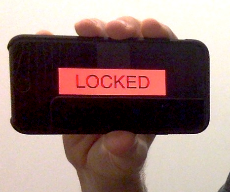
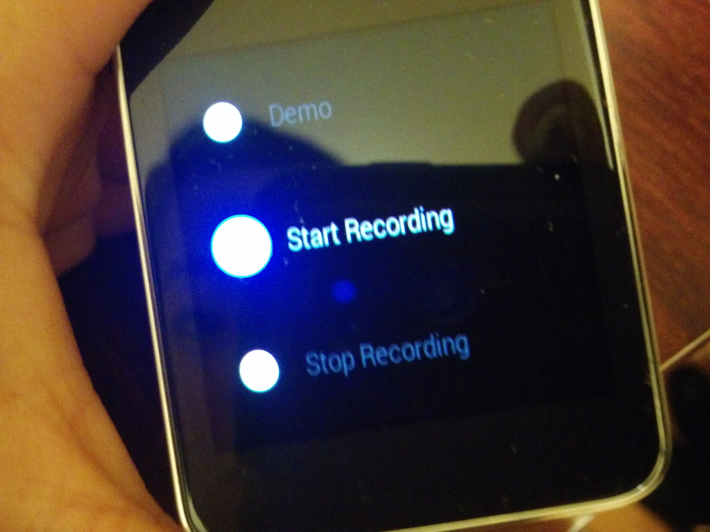
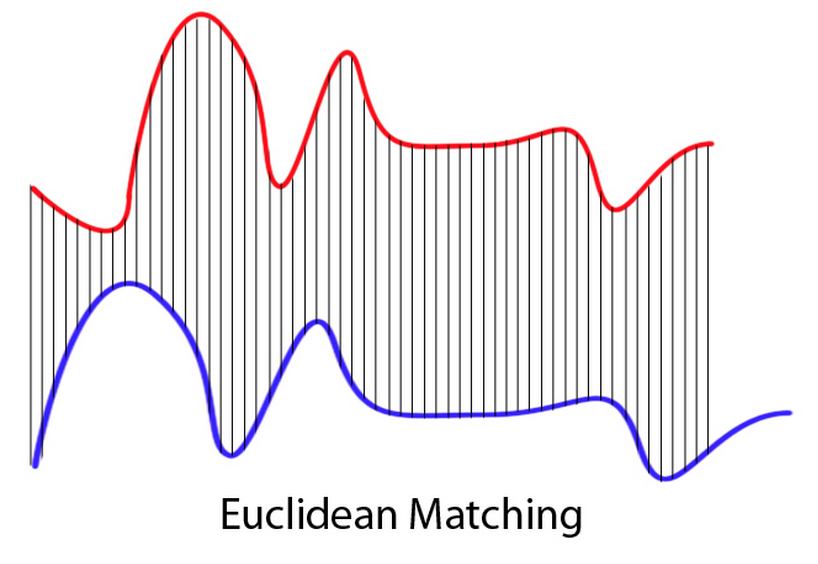
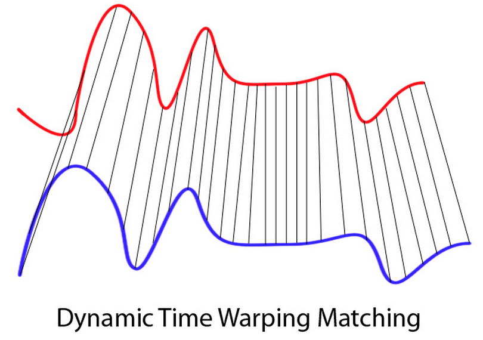
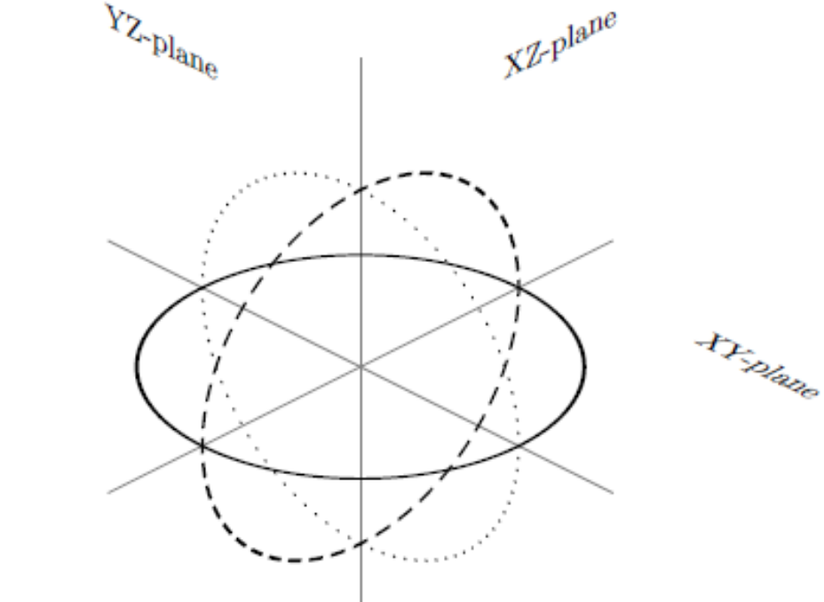

# SmartLock2.0: Wearable Authentication for Smart Locks
#### Grant Ho, Linda Lee, Peter Bailis
#### INFO 290: Sensors, Humans, Data, Apps
----
<!--- http://daringfireball.net/projects/markdown/syntax -->
## Introduction
In this project, we addressed several shortcomings of existing smart
lock security by integrating wearable technology into the smart lock
authentication process. During our prior experience with
smart locks in [Project One](http://www.bailis.org/private/info290/p1/report.html),
we found that existing locks strive for effortless ease-of-use at the
expense of failing to secure detect intent;
namely, existing smart locks fail to distinguish between
deliberate, legitimate attempts to unlock smart lock devices and
accidental or illegitimate attempts to unlock them. In this work, we
leverage wearable technology and simple gesture recognition in an
attempt to strengthen the intent communication process in
smart lock authentication. This document describes our initial system design
and implementation, as well as our analysis and reflections on the completed
prototype for securely and usably determining when a smart key should
authenticate to a smartlock.
The remainder of this document proceeds as follows: we introduce our
specific [problem statement](#statement) and describe our proposed
[system architecture and recognition algorithm](#arch). We
subsequently describe the resulting [end-to-end user experience](#ui)
and our prototype's efficacy in [mitigating specific
attacks](#mitigating). We also discuss [shortcomings](#remaining) of
our current approach and directions for [future work](#futurework) in
mitigating them before [concluding](#conclusions).
<a href="#" id="statement"></a>
## Problem Statement
As we have discussed, our prior experiences with smart lock security
were marked by a number of security flaws, largely dealing with the
ability to capture *user intent* in unlocking a door. In our analysis
of the Kevo Smart Lock, we found that the lock would frequently grant
access to an unauthorized attacker if the key holder was in close
proximity to the door. The lock lacked a means of distinguishing
whether or not the key's proximity to the lock signalled an intent to
open the door or whether the proximity was simply a matter of
coincidence or other clever social engineering on behalf of a would-be
attacker. Faced with this ambiguity, the Kevo lock would simply unlock
the door, compromising the security of the system and that of the
system user.
In this project, we wanted to explore ways of mitigating these
security threats by better capturing the intent of the
user. Specifically, we asked the question:
***Can we use wearable technology to augment existing smart lock
systems' ability to detect user intent?***
Rather than simply replace existing smart lock technology based on
proximity sensing, we sought to strengthen the smart lock's sensing
capabilities to better understand intent. Towards this end, we
investigated the use of wearable technology---specifically, the use of
"smart watch" wearable computers---as an additional input device
during the authentication process. In effect, this additional input
allows a key holder's device to more securely and accurately
determine when it should attempt to authenticate to a smartlock.
The resulting challenges were three-fold. First, how could we design
an authentication system that preserved existing modes of operation
(thereby minimizing cognitive and procedural overheads for users)
while integrating these new devices? Balancing usability and security
is a perennial challenge and therefore we sought to minimize the
disruption in existing authentication routines. Second, what
watch-based sensors and/or authentication methods were most suitable
for actually performing the authentication? Namely, our platform
offered a variety of data sources, including acceleration, rotation,
and touch sensors. Which would be most useful? Third, how can we
actually build such a system practically and efficiently? Actually
writing the software to wire together such sensors (ideally in a
backwards-compatible manner) proved to be a somewhat challenging
exercise in systems integration and software engineering.
In the next section, we discuss our proposed architecture and
prototype for detecting when a smart key should authenticate
and request action from a smart lock.
<a href="#" id="arch"></a>
## System Architecture and Algorithm
To address our problem statement above, we developed a prototype
smart lock system that realizes the benefits of proximity sensing
*combined* with gestural recognition.
#### Solution Overview
In all, our system architecture combines both touch-based
authentication commands with accelerometer-based gesture
recognition. We relay the sensor readings from a watch-based
accelerometer to a centralized authentication server to detect the
physical gesture of unlocking a given lock. Upon lock authentication
request, the lock queries the authentication server to ensure
not only that an authorized key is in range, but also that the user has recently
performed the appropriate gesture required for lock release.
We provide additional details about user experience and interface in
the next section, but, for now, we assume that the user is wearing a
smart watch with our smartlock app installed (described below), which
mirrors the setup for existing smartlocks (which ask you to install
their app on your smartphone).
#### Prototype Description
We prototyped our system using a range of technologies. We
describe each component of our solution at a high level below, then
discuss specific algorithmic details and design decisions:
<center style="padding-bottom: 1em;">
<img src="arch.png" width=600 /><br />
**Figure 1: Overall Prototype Architecture. A range of technologies
enable securely and usably determining when smart lock
authentication should be initiated.**
</center>
* **The lock** is an internet-enabled smart lock able to make HTTP
requests over the public Internet to the authentication
service. In our prototype, the lock is an HTML5 website accessed
via a smart phone. When a user triggers the "unlock" dialog on
the website, the phone makes an AJAX call via REST to a
centralized authentication server to determine whether or not to
authenticate the user. (Our current lock prototype does not
actually physically unlock anything, but it displays an
appropriate dialog to the user as if it actually did.)
In practice, the lock could use a phone as a
local proxy for authentication, with appropriate authenticated encryption
performed with the server.
<center style="padding-bottom: 1em;">
<br/>
**Figure 2: Lock prototype website displayed on an iPhone 6.**
</center>
* **The watch** is a [Samsung Gear
Live](https://play.google.com/store/devices/details?id=samsung_gear_live_black&hl=en)
watch running the Google Android Wear operating system. The watch
contains a custom program written using the [Android Wear
API](https://developer.android.com/wear/index.html) to access
the watch's accelerometer sensors (sampled at 60 Hz) and relay
them (via Bluetooth) to a [Moto G Android
phone](http://www.google.com/nexus/). The smart phone runs an
Android app, written in Java, that relays the watch's
accelerometer readings to the authentication server.
<center style="padding-bottom: 1em;">
 <br/>
**Figure 3: Some options from our data collection application on the Samsung Gear Live.**
</center>
* **The authentication server** is a Python application written
using the [Flask HTTP
microframework](http://flask.pocoo.org/). The authentication
server stores the latest sensor readings and, upon
authentication request (from the lock front-end), calculates
whether the user has performed the specific lock authentication
gesture (algorithm described below). We deployed the server on
Amazon EC2, where it is publicly accessible via REST calls and
HTTP.
* For convenience during development, we have added a **monitoring
window** that allows developers to view the current watch
accelerometer readings.
#### Algorithm Design
When deciding how to actually perform the algorithmic gesture
recognition, we considered a range of algorithms, including dynamic
time warping (see [below](#futurework)) and advanced machine learning
techniques such as [deep neural
networks](http://en.wikipedia.org/wiki/Artificial_neural_network). Ultimately,
over the course of our development, given the complexity of simply
gluing together all of the sensors required to enable a real
end-to-end application of smart watch technology, we decided to start
with a very simple algorithm instead.
Per above, we decided to use the accelerometer readings as a proxy for
determining whether a user had raised her hand to the lock in order to
trigger the touch-based authentication sensor. We viewed the
accelerometer readings during a series of trial "unlocking" actions
and found that, often, we would unlock the door by performing a
sweeping motion, bringing the wrist from waist to door; we noticed
that while one is walking, the z-acceleration detected by the watch
is quite low because your hand usually sideways when you walk
(namely, the palm of your hand faces inward to your body, meaning
the watch face is sideways). When reaching to push a button in front
of us, we noticed that we naturally rotated our hand to be palm-down as we
lifted our hand from waist to the door's "unlock button".
This corresponds to an increased, positive acceleration in the z-dimension because
not only are we raising (accelerating) our arm upwards from waist to door, but now
that our hand is rotated to its "flat" position, the z-accelerometer sensor also registers
a greater acceleration (gravitational) force because the watch face is now upright;
the plot below (viewed via our server's monitoring window) illustrates
an instance of thi phenomenon.
<center style="padding-bottom: 1em;">
<img src="graph.png" width=600 /><br />
**Figure 4: Accelerometer readings from an unlock gesture (arm raise
peaking at 12.5 m/s/s).**
</center>
After some trial and error, we determined that we could leverage
this pattern in accelerometer changes
to better determine a user intent's
intent to lock or unlock. Specifically,
when the server received a touch-based authentication request, we
calculated the average positive acceleration over the past two seconds
of data and, if the acceleration was sufficiently positive, we
unlocked the door. The actual choice of threshold will be somewhat
user-specific, but we found a common choice that was well-suited for
our purposes.
Ultimately, this simple design [has some drawbacks](#remaining) but serves
as an excellent initial prototype [sufficient to mitigate many of the threats that we
considered](#mitigation).
#### Design and Engineering Decisions
Over the course of our implementation, we made a number of
decisions that influenced our final prototype. We outline several here:
* **Actual lock integration:** Barring the ability to flash the
firmware of our existing smart lock, we decided to mock up the
lock prototype using HTML5 and Javascript. This was sub-optimal
in terms of actual lock usability, but it was sufficient as a
proof of concept of our authentication strategy. In a production
deployment, we would need to either modify the existing firmware
or build a new microcontroller-based lock. A platform such as
[Arduino](http://www.arduino.cc/) would make this feasible.
* **Reliance on a global server:** Using a single server simplified
the authentication process; indeed, as we discussed in our prior
work even the Kevo lock appears to use a centralized server when
possible to facilitate dynamic Bluetooth key
authentication. Nevertheless, especially in the event of Internet
outaages and sporadic connectivity, it would be advantageous to
pursue a more decentralized architecture, possibly with the lock
server located physically within the locked space or,
alternatively, on the smart device itself (provided the platform
provided a sufficiently strong [trusted computing
base](http://en.wikipedia.org/wiki/Trusted_computing_base)). Moreover,
eliminating the smart phone entirely would have been useful, albeit
at the cost of either requiring Internet connectivity for the
watch (requiring more power) or requiring a suitable alternative
for a Bluetooth-based sensor proxy.
* **Proximity sensing:** Our current prototype does not perform
proximity-based authentication with a Bluetooth fob as in the
Kevo system; rather, simply "clicking" (or, on our smartphone,
pressing) the lock button is sufficient to trigger the
authentication script. This does not appear fundamental but is
another feature that we cut in order to expedite development.
* **Sensor use**: We currently require that the watch application and
phone application be running in order to authenticate with the
lock. In practice, this requires the user to either keep this
applications running continuously (draining battery and consuming
network bandwidth) or to activate these applications when she
wishes to unlock her smart lock. This is at odds with out design
goal above but simplified our engineering process. We envision a
combination of low-power listening modes and GPS-based proximity
detection to reduce these expenses. Also, we decided not to
investigate the use of additional sensors on the phone, such as
the rotation sensor. This would help eliminate some of the false
negatives that we describe below.
<a href="#" id="ui"></a>
## User Interface and Experience
The interface for our "smartlock" consists of a large button displayed on a smartphone;
users simply taps on the button when they want to lock or unlock the "smartlock". This
interaction model mirrors the Kevo smartlock where a user taps on the keyhole in order
to lock/unlock the door.
<center style="padding-bottom: 1em;">
<img src="locked.png" width=200 /> <img src="denied.png" width=200 /> <br />
**Figures 5 and 6: Our smartlock UI in its locked and access denied states.**
</center>
Our system strives to preserve as much of the natural locking/unlocking process as possible,
while simultaneously providing a secure mechanism to determine when a user is requesting action from the smartlock.
As such, we thought about the fundamental components of the locking/unlocking process for
existing smart lock and door systems. Our brainstorming led to the realization that most modern doors
require a user to reach for a doorknob (or in the case of Kevo) tap on a lock's keyhole; until a new, dominant
interaction model (such as automatic sliding doors seen in Star Trek), it seems that users will always
need to reach for the doorknob in order to open it. Furthermore, most conscious home owners do not immediately
reach for their door's internal lock or doorknob without first verifying the guest's identity (usually
either by asking something to the effect of "who's there?" or looking into their door's peephole).
Thus, by detecting whether or not a user is performing a reaching gesture (finished by
tapping or pushing on something for the Kevo-style interaction), we can securely and accurately determine
when our key should authenticate to the smartlock with false negatives (failing to
recognize when users are legitimately trying to unlock their door/authenticate to the smartlock).
We plan to conduct sound user studies to validate this hypothesis, but based on our personal
experimentation, we found that we had no trouble correctly unlocking the door when desired (low
false negatives); the security of our system (false positives: when our system incorrectly
initiates authentication between the key and lock and allows an attacker to enter) are discussed in the following [Threat
Mitgation](#mitigation) section.
<a href="#" id="mitigation"></a>
## Threat Mitigation
For this project, we aimed to design a defense against
attacks or errors that emerged as a result of insecure and imprecise mechanisms
for users to communicate their intent to unlock a door. In particular, we consider
side-of-the-door attacks: a home owner, "Bob" is inside his home while "Alice", an attacker outside
his home, attempts to trick Bob's key into unlocking the door. With the Kevo smartlock,
if Bob gets close enough to the door with his key fob or smartphone, then Alice is able to
unlock his door by simply tapping on the smartlock keyhole and waiting for the lock to authenticate
with Bob's nearby key device; while the Kevo lock claims to leverage proprietary algorithms to detect
when a key is inside of the house/behind the door, our experiments from Project 1 showed that
we're often able to trick the smartlock into unlocking when our key fob was behind the door.
We believe that our "reaching-and-tapping" gesture recognition feature secures Kevo, and other
smartlock systems, against this category of attacks. In particular, as we discussed in the preceding section,
we believe it is unlikely for a homeowner to reach for their door's internal lock without verifying a visitor's
identity. Consequently, even though Bob's smart key may be arbitrarily close to the smart lock, since he performs no
reaching-and-tapping gesture, Bob's smart key will not even attempt to authenticate to the smart lock, preventing
Alice from unlocking Bob's home door and protecting smart lock owners against this category of attacks.
<a href="#" id="remaining"></a>
## Remaining Threats
Our wearables gesture recognition smartlock authentication scheme can be vulnerable to the threats we mitigate if there are false positives in recognizing the gesture. Therefore, it is critical that the gesture used for authentication is an [optimal gesture](#futurework). For instance, our system mitigates against relay attacks because of the condition that the relay attack has to be performed in a specific time window while the authenticating gesture is made by the user. If the attacker was somehow able to socially engineer the user to perform a similar motion, cause a false positive, and implement his attack, the smartlock will be vulnerable.
Our system was intentionally designed to address the problem of accurately indicating intent for smart lock authentication systems. However, there are other threats which remain unaddressed by the system and the research community, such as the possibility for smartlock malware. Other remaining vulnerabilities include the possibility of physical theft of the authenticating wearable device, physical attacks to break the smartlock, any cryptographic attacks if a [lock manufacturer has a custom encryption implementation](http://www.bailis.org/private/info290/p1/report.html#attacks).
<a href="#" id="futurework"></a>
## Future Work
Next steps for improving smart lock security by integrating wearable technology into the smart lock authentication process involves: investigating for the optimal gesture for authentication and implementing more refined gesture recognition techniques.
#### The Optimal Gesture
For our system, we chose the gesture most natural and indicative of interacting with the lock--tracking when a user reaches to push the button on the lock. Since users do would perform this motion when interacting with the lock, no additional effort, prior knowledge, or training is required of the user. Additionally, since the motion is used when interacting with the lock, this motion can serve as a strong indicator of intent.
However, there are benefits to trading off how usable a system is for a user for security guarantees. For instance, a more difficult and uncommon gesture (such as drawing a circle), is both more difficult for the user to perform, requires prior knowledge of the system, and requires a shift in habit. While less convenient for the user, this does prevent unauthorized users without prior knowledge (or very lazy unauthorized users) from using this lock.
A less common gesture also has the advantage of triggering less false positives, due to its uncommon nature. If a motion is very common, there is the possibility that the lock will open without the user's intent. Currently, our system requires that an authorized user had made a reaching motion within the last two seconds before there was a signal to unlock the smartlock. Our current reaching motion provides sufficient mitigations against the attacks mentioned above, but further research can be done to find the optimal gesture which makes appropriate tradeoffs between usability and security.
#### Better Gesture Recognition Techniques
As a first step for continuing simple reaching gestures, we can incorporate the x-accelerometer readings to detect
when a user's hand is moving in a forward direction (moving from the user's waist to reach something in front of him/her).
For more advanced improvements, there are several promising machine learning techniques we can turn to, such as dynamic
time warping. Currently, our gesture recognition does not take into account slight intra-gesture variances in time or features. Ideally, the system should be able to detect user intent when a user reaches for the lock in a manner which is definitively the correct gesture, but performed slightly faster or slower, or lifts the hand slightly lower or higher.
This can be addressed with dynamic time warping (DTW), which measures similarities in two signals which may vary slightly in time or amplitude. Essentially, DTW allows a non-linear mapping of one signal to another by minimizing the distance between the two. This phenomenon is illustrated in the figures below:
<center style="padding-bottom: 1em;">

 <br />
Figures 7 and 8: A contrast between Euclidean matching and DTW matching. <br />
(source: http://th.wikipedia.org/wiki/Dynamic_time_warping)
</center>
Another desirable feature for gesture recognition is to allow for the gesture to be performed in an arbitrary plane. Since our system currently uses absolute accelerometer calculations for detecting gestures, normalizing gestures for planes will not make a difference. However, for other gestures (such as drawing a circle, a five-pointed star, etc.), having the flexibility for the user to draw the authenticating shape in different planes will make the system much less brittle and therefore more usable to the user. Imagine if a user had to draw a circle in a plane perfectly parallel to the lock face in order to authenticate! Plane normalization is definitely a necessity when considering more complex gestures.
<center style="padding-bottom: 1em;">
<br />
Figure 9: Circles drawn in three planes. Plane normalization allows the user to authenticate with the correct gesture on any plane.
</center>
Exciting future work lies ahead. Investigating for the optimal gesture for authentication and implementing more refined gesture recognition techniques will only improve our current authentication system.
<a href="#" id="conclusions"></a>
## Conclusions
Fundamentally, our system aims to provide a secure and usable mechanism
for users to communicate their intent to lock/unlock their door, which
subsequently enables smartlocks to determine *when* they should authenticate and perform
a locking/unlocking action. From Project 1, we saw that existing smartlocks
sacrifice this important security property in order to facilitate an
easy user experience. By carefully thinking about the natural locking/unlocking process
for existing smartlocks, we identified a fundamental action onto which we could bootstrap
our mechanism for secure intent communication - thereby maintaining high usability
in our system by preserving the natural unlocking process. This project also served as a good foray
into studying the security of the Internet of Things: not only did we discover new security problems
in emerging technology, but we also explored how the proliferation of new devices, and their
interactions (smartwatch to smartlock), can actually improve the security of systems (as opposed
to simply increasing the attack surface of systems).
## Acknowledgements
The authors would like to thank John Chuang, the students enrolled in
the Fall 2014 offering of INFO 290, Dawn Song, and David Wagner for
their feedback and assistance on this work. This project is supported
in part by the Intel Science and Technology Center for Secure
Computing ([SCRUB](http://scrub.cs.berkeley.edu/)). Moonpie graphic by
Simon Child licensed as Creative Commons -- Attribution (CC BY 3.0).